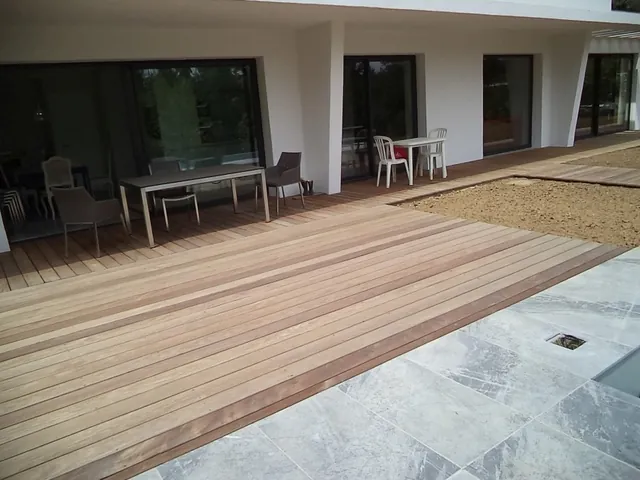
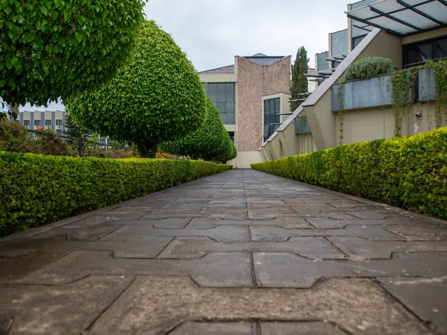
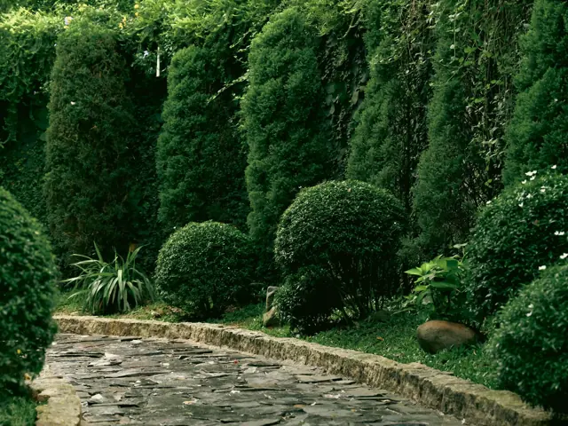
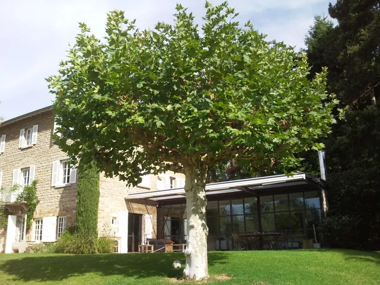
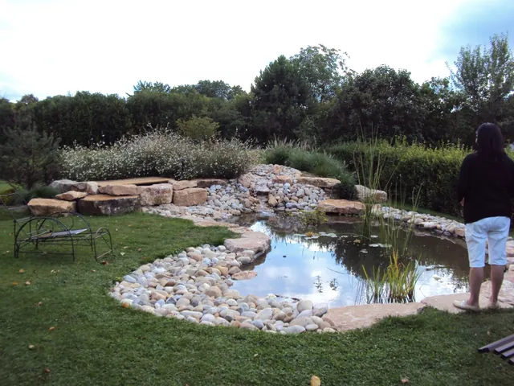
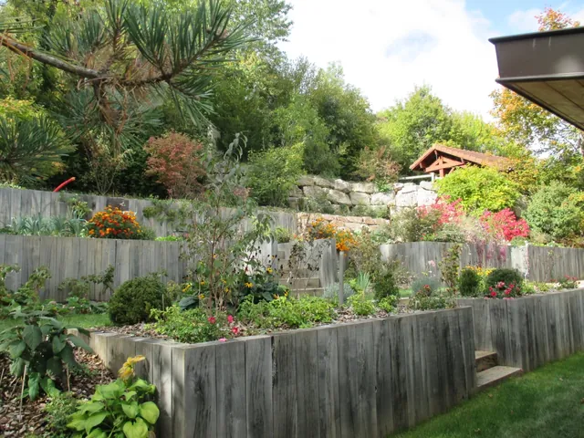
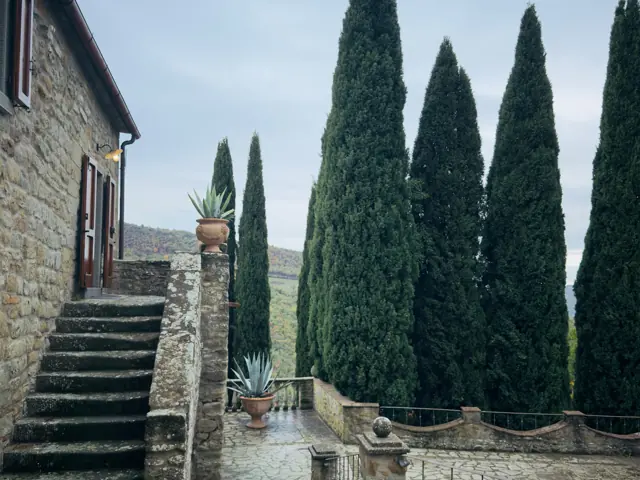
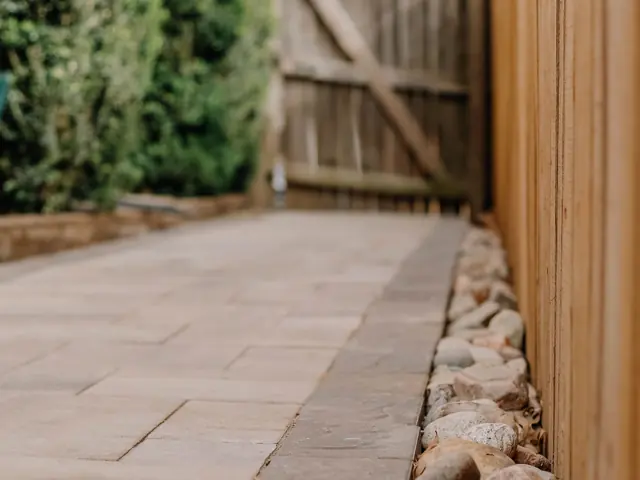
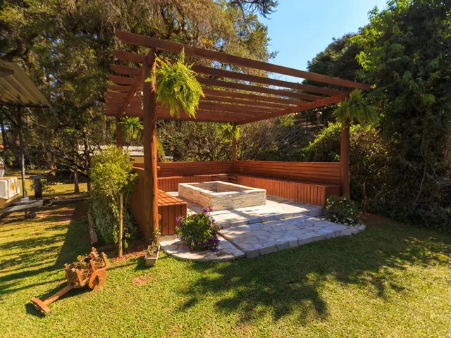

01Terrasses et dallageZone de vie reliant la maison au jardin, nos terrasses sont de véritables pièces à vivre. Grès cérame, pierre naturelle locale ou exotique, bois composite, exotique ou local : nous vous guidons dans le choix des matériaux.
02Cours, allées et parkingsPremier accès à votre maison : pavage, dallage, sable stabilisé, béton désactivé, enrobé, bordures… Nous allions praticité et esthétique, dans l’Ain et le Rhône.
03Plantations et gazonsArbustes, massifs fleuris, haies, arbres, talus, gazons, prairies, pelouses… Nous aménageons votre jardin selon vos goûts, avec les Pépinières Daniel Soupe, dans l’Ain.
04Plantation de grands sujetsDes connaissances et des équipements spécifiques pour planter des sujets d’exception, ou transplanter les grands sujets déjà présents dans votre jardin. Dans l’Ain et le Rhône.
05Bassins et fontainesBassins d’ornement, étangs de jardin, fontaines, cascades ou jeux d’eau : terrassement, étanchéité en bâche, filtration et stérilisateur UV pour une eau claire. Bassins maçonnés à étanchéité enduite.
06Murs, enrochements et maçonnerie paysagèreAplanir, stabiliser un terrain en pente, créer ou réaménager un espace de vie, délimiter les espaces : murs, enrochements et maçonnerie paysagère dans l’Ain (01) et autour de Lyon (69).
07EscaliersPour relier les paliers du jardin ou accéder à la maison ou à la terrasse : pierre taillée, dalles d’enrochement, bois, pavés ou métal, des matériaux qui allient esthétique et praticité.
08Clôtures et portailsPour intimiser ou protéger : ajourées ou occultantes, contemporaines ou rustiques, en divers matériaux et coloris. Treillis soudé, simple torsion, brise-vue, soubassement béton, claustras aluminium ou bois…
09Pergolas, carports et équipementsPergola ombragée, abri de jardin en bois ou composite, carport pour abriter vos véhicules : conception et installation d’équipements de jardin et de solutions sur mesure.
La Chapelle-du-Châtelard · Ain (01)Allée et courTerrassement, chemin en concassé, bordures en pavés granit, béton désactivé roulé Château, lignage de pavés en béton, plantations.
Ain (01)Aménagement d’un jardinTerrasse en grès cérame, escalier béton habillé grès cérame, cour en béton désactivé, allée en pavés basalte, jardinières en palis d’ardoise, arrosage automatique, plantations, engazonnement.Conception : Intérieur et Paysage
Manziat · Ain (01)Aménagement d’une courTerrassement, sablé renforcé, bordures acier, pavage en granit beige.
Nantua · Ain (01)Aménagement d’une propriétéPavage, béton désactivé, marches pierre, dallage basalte, muret granit, plantations, muret pierre sèche.
Châtillon-en-Michaille · Ain (01)Jardin à Châtillon-en-MichailleTerrasse bois en ipé, escaliers et pas japonais en pierre de Chandore, soutènement en traverses de chêne, arrosage automatique, plantations et engazonnement.Conception : Bellion-Jourdan, Art-Design & NatureVictoires du paysage 2018
Saint-Genis-Pouilly · Ain (01)Jardin à Saint-Genis-PouillyTerrasse pierre, escalier et pas japonais en Bleu de Savoie, platelage en composite, gazon de placage, fontaine, pergolas, plantations.Conception : Bellion-Jourdan, Art-Design & Nature
Ain (01)Jardin d’inspiration japonaiseDans un site ombragé et vallonné : chemin en sablé, enrochements, rivière, galets, bassin, plantes de terre de bruyère et d’ombre, pas japonais en ardoise et pierre de Saint-Martin-Belleroche.